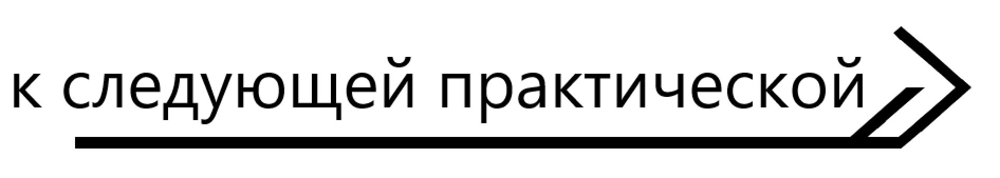

SEO (СЕО) - комплекс мер по продвижению сайта в поисковых системах и выводу положения сайта в «топ» - то есть так, чтобы сайт по интересующему нас запросу находился на первой странице поисковика (а туда, как известно, помещается только 10 ссылок). Это нужно для увеличения посещаемости сайта, так как большая часть посетителей сайта приходит именно с поисковых систем. Поэтому, чем выше наш сайт в выдаче поисковика – тем больше у него посетителей.
Самыми популярными поисковиками на нашей территории являются Google и Yandex и именно за их внимание к своему сайту и ведется постоянная борьба между веб-мастерами. Позиции сайта в выдаче поисковика зависят от релевантности (соответствия) запроса пользователя содержимому сайта и от специальных индексов. Для гугла это PR(PageRank), а для Яндекса – ТИЦ (тематический индекс цитирования). Чем больше эти показатели, тем выше будут позиции сайта по сравнению с конкурентами.
Пусть, например, у нас есть сайт, посвященный городу Минску с названием «город Минск» с ТИЦ 100 и PR 2. И есть сайт- конкурент с названием «Все о городе Минске» с ТИЦ 200 и PR 1. Тогда по запросу «сайт о городе Минск» позиции нашего сайта будут ниже, чем у конкурента, а в гугле наоборот наши будут выше (т.к. наш ТИЦ меньше ТИЦ конкурента, а с PR наоборот – наш больше).
